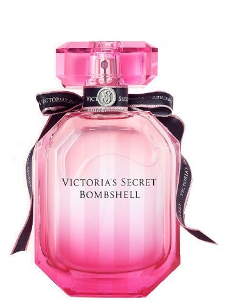
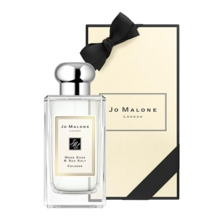
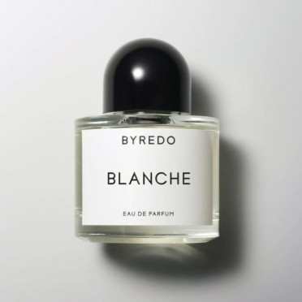

3.밤쉘 솔직히 빅토리아 시크릿의 브랜드를 좋아하는 편은 아니였는데 이 향수 덕분에 인식이 많이 바뀌게 됐어! 되게 달달한데 호불호 심한 향이 아니라 여성에게 선물용으로 추천해!

4.조말론 조말론은 유명하지?! 그중에서도 나는 우드세이지 앤 씨솔트라는 향을 가장 좋아하는데! 우디향이 중성적인 느낌을 많이 주는데 남녀 구분없이 잘 쓰는 향이야 조말론 처음 입문할땐 블랙베리 앤 베이로 시작하더라구~

5. 바이레도 블랑쉬 명품 향수중에 가장 호불호가 덜 한 여성들에게 인기 좋은 향수야 전체적으로 무거운 향수는 아니고 비누향이 많은 향이야 가격대는 조금 있지만 인기상품인 이유가 있는 향이기에 추천해!